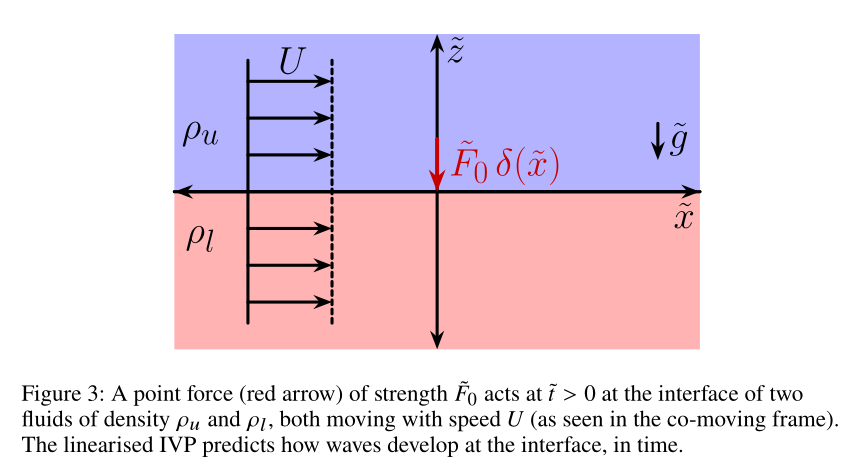
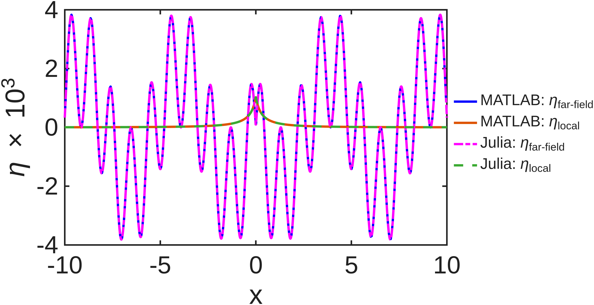

ForcedInterfacialWaves.jl
Julia implementation of the initial value problem (IVP) for pressure-forced interfacial waves in a two-fluid system. Please see the manuscript file below for details
Based on:
Kadari, V.K., Yewale, N., Farsoiya, P.K., Mayya, Y.S. & Dasgupta, R. (2026). Interfacial waves from pressure forcing: revisiting classical theories from an IVP perspective. arXiv preprint arXiv:2605.12254.
Citation
@article{kadari2026interfacial,
title={Interfacial waves from pressure forcing: revisiting classical
theories from an {IVP} perspective},
author={Kadari, Vinod Kumar and Yewale, Nikhil and Farsoiya, Palas Kumar
and Mayya, Y. S. and Dasgupta, Ratul},
journal={arXiv preprint arXiv:2605.12254},
year={2026}
}Problem

As shown above (Fig. $3$ in the manuscript), a localised pressure $\tilde{p}_e = \tilde{F}_0\delta(\tilde{x})$ force is applied at the interface between two inviscid, incompressible, fluids of infinite depth, both streams moving at uniform speed $U$ rightwards. In the absence of this forcing, the interface is flat and remains at $\tilde{z}=0$. After non-dimensionalisation, the interfacial displacement resulting from the forcing i.e. $\eta(x,t)$ is obtained by evaluating the following time-dependent Fourier integrals (eqns. $3.7$ and $3.8$ in the manuscript)
\[\begin{aligned} \dfrac{\sqrt{2\pi}\;\bar{\eta}(k,t)}{F_0} &= \left(\dfrac{1}{-\alpha|k|^2 + \left(1+\rho_r\right)|k| - \left(1-\rho_r\right)}\right) \\ &\quad - \dfrac{1}{\alpha |k|^2 + \left(1 - \rho_r\right)} \left(\dfrac{k}{2}\right) \Bigg( \dfrac{\exp\left[-it\lambda_2(k)\right]}{\lambda_2(k)} + \dfrac{\exp\left[-it\lambda_1(k)\right]}{\lambda_1(k)} \Bigg) \tag{3.7} \end{aligned}\]
The inverse Fourier integral, leads to the (non-dimensional) interface displacement as a function of time:
\[\begin{aligned} \eta(x,t) = \dfrac{1}{\sqrt{2\pi}}\int_{-\infty}^{\infty}dk\;\exp\left(ikx\right)\bar{\eta}(k,t), \end{aligned} \tag{3.8}\]
where $\lambda_{1,2}(k) \equiv k\mp\sqrt{\dfrac{\alpha|k|^3}{1+\rho_r}\;+\;\beta|k|}$ and
\[\alpha = \frac{gT}{\rho_l U^4}, \quad \rho_r = \frac{\rho_u}{\rho_l}, \quad \beta = \frac{1-\rho_r}{1+\rho_r}. \]
Steady-state decomposition (manuscript §3.4)
In this section, the manuscript shows that neglecting the time-dependent terms in eqns. (3.7) and (3.8) and $\textit{without}$ using any Rayleigh dissipation, the steady-state response turns out to be (we exclude all the Dirac delta function terms in eqn. $3.9$ in the manuscript) the following. For proof of this, see Steady-state proof.
\[\begin{aligned} \dfrac{\eta_{s}(x)}{F_0} =\dfrac{ \eta^{\text{far-field}}_{s}(x)}{F_0} + \dfrac{\eta^{\text{local}}_{s}(x)}{F_0},\tag{3.11} \end{aligned}\]
where ,
\[\begin{aligned} \dfrac{\eta^{\text{far-field}}_{s}(x)}{F_0} \equiv \dfrac{1}{\alpha(k_l-k_s)}\bigg\{-\sin(k_s|x|)\quad + \quad \sin(k_l|x|)\bigg\} \\ \dfrac{\eta^{\text{local}}_{s}(x)}{F_0} \equiv \dfrac{\left(k_l+k_s\right)}{\pi\alpha}\int_{0}^{\infty}dy \dfrac{y\exp\left(-|x|y\right)}{\left(y^2 + k_l^2\right)\left(y^2+k_s^2\right)},\quad x\neq 0 \end{aligned}\]
The integral expression for $\frac{\eta^{\text{local}}_{s}(x)}{F_0}$ above is solved numerically (in Julia and MATLAB) using the following codes:
Julia
|
MATLAB
|
The resulting figure from both Julia and MATLAB are superimposed in the following figure, which is a reproduction of fig. $5a$ in the manuscript.

Figure 5a: Comparison of steady wave profiles computed in MATLAB vs Julia.In eqn 3.11 , $\eta^{\text{local}}_{s}(x)$ , can be shown to be exactly equivalent to (for the proof, see here).
\[G(x) \equiv \dfrac{1}{k_{l}-k_{s}}\int_{0}^{\infty}\;dk\;\left(\dfrac{\cos(kx)}{k+k_{s}}-\dfrac{\cos(kx)}{k+k_{l}}\right)\]
Manuscript §4 :
Zero capillarity limit ($\alpha= 0$) - section §4.1 in the manuscript
\[ \begin{align} \eta(x,t) &=& \eta_{s}(x) + \eta_{tr}^{(1)}(x,t) + \eta_{tr}^{(2)}(x,t), \end{align}\tag{4.1}\]
\[ \begin{align} \dfrac{\eta_{s}(x)}{F_0} &\equiv \dfrac{1}{2\pi\left(1+\rho_r\right)}\int_{-\infty}^{\infty}dk\; \dfrac{\exp\left(ikx\right)}{|k| - \beta},\quad 0 < \beta \leq 1 \nonumber\\ \dfrac{\eta_{tr}^{(1)}(x,t)}{F_0} &\equiv - \dfrac{1}{4\pi(1-\rho_r)}\int_{-\infty}^{\infty}dk\;\dfrac{k\;\exp\left[-i\left(k(t-x) + t\sqrt{\beta|k|}\right)\right]}{k+ \sqrt{\beta|k|}}, \nonumber\\ \dfrac{\eta_{tr}^{(2)}(x,t)}{F_0} &\equiv - \dfrac{1}{4\pi(1-\rho_r)}\int_{-\infty}^{\infty}dk\;\dfrac{k\;\exp\left[-i\left(k(t-x) - t\sqrt{\beta|k|}\right)\right]}{k- \sqrt{\beta|k|}}. \tag{4.2a,b,c} \end{align} \]
It may be further shown using principal value techniques that (see proof here)
\[ \begin{align} \dfrac{\eta_{s}(x)}{F_0} &=& \dfrac{1}{\pi\left(1+\rho_r\right)}\left[-\pi\sin\left(\beta |x|\right)+\int_{0}^{\infty}dy\;\dfrac{y\exp\left(-|x|y\right)}{\beta^2 + y^2}\right],\quad 0 < \beta \leq 1,\; -\infty < x < \infty \nonumber \\ \end{align} \tag{4.3}\]
\[\eta_{s}(x)\]
in expression (4.3) is a symmetric function of $x$, implying a symmetric response upstream and downstream of the forcing at $x=0$. However, a contribution to the steady-state also comes from the time-dependent term in eqns. (4.2b),(4.2c). As shown in the proof(here) these transient terms may be further simplified to obtain the following analytical representation valid for all $x,t$ i.e.
\[\begin{aligned} \eta_{tr}(x,t) &\equiv \eta_{tr}^{(1)}(x,t) + \eta_{tr}^{(2)}(x,t) = \bigg\{\mathbb{T}_1(x) + \mathbb{T}_2(x,t) + \mathbb{T}_3(x,t) + \mathbb{T}_4(x,t)\bigg\}F_0, \quad\text{where} \end{aligned}\]
(4.4a)
\[\mathbb{T}_1(x)\equiv \mp\left(\dfrac{1}{1+\rho_r}\right)\sin(\beta x),\]
(4.4b)
\[\mathbb{T}_2(x,t) \equiv - \dfrac{4\beta^{-1}}{\pi\left(1+\rho_r\right)}\int_{0}^{\infty}dv\; v^2\;\dfrac{\exp\left(\mp 2av^2 \pm 2bv\right)}{\beta + \left(2v-\beta^{1/2}\right)^2}\Biggl\{\beta^{1/2}\cos\left(\beta^{1/2}tv\right)\pm \left(2v-\beta^{1/2}\right)\sin\left(\beta^{1/2}tv\right)\Biggr\},\]
(4.4c)
\[\mathbb{T}_3(x,t)\equiv \dfrac{\beta^{-1/2}}{\pi\left(1+\rho_r\right)}\left(1 + \dfrac{t}{2\left(t-x\right)}\right)\sqrt{\frac{\pi}{2|a|}}\left[\cos\left(\frac{b^2}{|a|}\right)\left\{\frac{1}{2}\mp \mathrm{C}\left(b\sqrt{\frac{2}{\pi |a|}}\right)\right\}+ \sin\left(\frac{b^2}{|a|}\right)\left\{\frac{1}{2}\mp \mathrm{S}\left(b\sqrt{\frac{2}{\pi |a|}}\right)\right\}\right],\]
(4.4d)
\[\mathbb{T}_4(x,t)\equiv - \dfrac{1}{\pi\left(1+\rho_r\right)}\left[\int_{0}^{\infty}\;dv\dfrac{\cos\left(av^2 + 2bv\right)}{v + \beta^{1/2}}\right],\]
where $a \equiv t-x, \; b \equiv \dfrac{t\sqrt{\beta}}{2}$, the upper signs in $\mathbb{T}_1(x),\mathbb{T}_2(x,t)$ are used for $x<t$, while lower signs are for $x > t$. The Fresnel integrals $\mathrm{C}(\cdot)$ and $\mathrm{S}(\cdot)$ in eqn. (4.4c) are defined as
(4.5)
\[\mathrm{C}\left(b\sqrt{\frac{2}{\pi |a|}}\right) \equiv \int_{0}^{b\sqrt{\frac{2}{\pi |a|}}}dt\; \cos\left(\frac{\pi t^2}{2}\right),\quad \mathrm{S}\left(b\sqrt{\frac{2}{\pi |a|}}\right) \equiv \int_{0}^{b\sqrt{\frac{2}{\pi |a|}}}dt\; \sin\left(\frac{\pi t^2}{2}\right).\]
In expressions (4.4), the time-independent term, $\mathbb{T}_1(x)$ (eqn. 4.4a), is asymmetric with the same amplitude as the first term on the right hand side of eqn. (4.3). As a result, these two terms reinforce each other for $x>0$ but cancel for $x<0$. Further, we note that as $\rho_r\rightarrow 1$ $\left(\beta = \dfrac{1-\rho_r}{1 + \rho_r}\rightarrow 0\right)$, the terms diverge. This is physically reasonable because in this limit ($\rho_r\rightarrow 1$), gravity vanishes and in the absence of capillary forces as well (i.e. $\alpha=0$ that we are currently assuming), there remains no restoring force to resist deformation due to the external pressure. The analytical strategy is clear now: provided one can show that $\mathbb{T}_2(x,t\rightarrow\infty)\rightarrow0$, $\mathbb{T}_3(x,t\rightarrow\infty)\rightarrow0$ and $\mathbb{T}_4(x,t\rightarrow\infty)\rightarrow0$, one obtains the expected steady-state lacking waves upstream (except for small localised deformation of the interface due to the localised integral in eqn. (4.3)) and sinusoidal waves downstream ($x>0$) with wavenumber $\beta$.
Finite-capillarity : ($\alpha > 0$) section §4.2 in the manuscript
This package evaluates these integrals numerically for two physical regimes:
| Case | Surface tension | Poles | Figure |
|---|---|---|---|
| Pure gravity ($\alpha = 0$) | absent | CPV at $k = \beta$ | 6 |
| Capillary–gravity ($\alpha > 0$) | active | Removable at $k_s$, $k_l$ (combined integrand cancels) | 10 |
What the code computes
Pure gravity (α = 0): The solution is decomposed analytically into $T_0$ (steady), $T_1^\pm$–$T_4^\pm$ (transient), where $T_3$ uses the Fresnel cosine and sine integrals (evaluated in closed form via FresnelIntegrals.jl, no quadrature). An independent direct numerical Cauchy principal value (CPV) evaluation verifies the analytical decomposition.
Capillary–gravity (α > 0): The combined integrand $\mathbb{I}(k; x, t)$ — which sums the steady part $\eta_s$ and the two transient integrands $\mathbb{I}_3$, $\mathbb{I}_4$ so that their singularities at the gravity root $k_s$ and capillary root $k_l$ cancel — is integrated over $[0,\infty)$ split around both poles. The classical steady solution via residues and a $G(x)$ integral is also computed for large-time comparison.
Quick start
Install julia from terminal
curl -fsSL https://install.julialang.org | shusing ForcedInterfacialWaves
# ─── Pure gravity ───
pg = compute_gravity_parameters() # returns PureGravityParams struct
t_pg = 1.0 / pg.t_c
# Analytical decomposition (left of wavefront):
η_total, η_steady, η_transient = gravity_analytical_left(-2.0, t_pg, pg)
# Independent numerical CPV verification:
η_cpv = gravity_numerical_cpv(-2.0, t_pg, pg)
# Individual T-terms for validation:
T0 = gravity_T0(-2.0, pg)
T3 = gravity_T3_left(-2.0, t_pg, t_pg + 2.0, pg) # uses fresnelc/fresnels
# ─── Capillary–gravity parameters (all CGS, matching the paper) ───
p = compute_cg_parameters() # returns CapillaryGravityParams struct
# Evaluate the IVP surface displacement at a single (x, t) point:
η = ivp_surface_elevation(3.0, 110.0, p)
# Compute a full spatial profile using threaded vector-valued quadrature:
x_grid = make_cg_xgrid(p; Nx=2001)
t = 3.0 / p.t_c # t_dim = 3 s → nondimensional
η_ivp = compute_cg_ivp_profile(x_grid, t, p)
η_steady = compute_cg_steady_profile(x_grid, p)Generating the paper figures
julia -t auto --project=. scripts/figure6_pure_gravity.jl
julia -t auto --project=. scripts/figure10_capillary_gravity.jlContents
- Theory
- Julia ↔ MATLAB
- 1. Pure Gravity: $T_0$ through $T_4^-$ at $x=-2$, $t_{\dim}=1$ s
- 2. PG Profile: Analytical vs CPV (Figure 6)
- 3. Capillary–Gravity Parameters
- 4. Combined Integrand $\mathbb{I}$ at $k=2$, $x=3$, $t=110$
- 5. Partial Integrals $I_1, I_2, I_3$ and $\eta_{\mathrm{IVP}}$
- 6. Steady Solution $G(x)$
- 7. CG Profile: IVP vs Steady (Figure 10)
- 8. Quadrature Parameters (identical in both)
- Validation
- API Reference